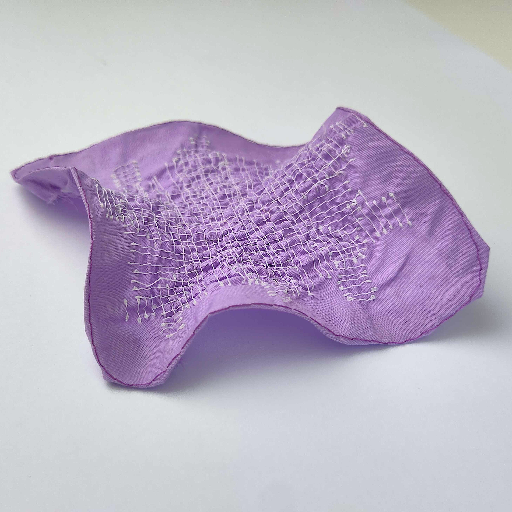

Fabricating 3D Shapes by Shrinking-Thread Embroidery
Abstract
We propose a computational method that repurposes embroidery as a tool for 3D fabrication. Given an input mesh, our method computes a freeform stitching pattern, such that an embroidered flat fabric approximates the target geometry. The stitching is done with polyester threads that permanently shrink when heat is applied, thereby generating curvature. Our approach is based on vector field optimization: we jointly optimize a shrinking field over the mesh surface and a corresponding planar parameterization that also allows for seams to arise in order to achieve higher curvatures than through shrinkage alone. Our energy formulation balances fabrication adherence, field smoothness, stitch consistency and validity of stretch values, and is minimized via an alternating algorithm. We demonstrate our method on a variety of target shapes and validate our results through both a digital preview tool and physical fabrication.